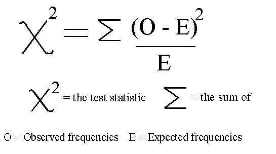

Chi-squared test
There are numerous uses for this test. Our example shows its use in the simplest way possible.
All chi-squared tests are concerned with counts of things (frequencies) that you can put into categories. For example, you might be investigating flower colour and have frequencies of red flowers and white flowers. Or you might be investigating human health and have frequencies of smokers and non-smokers.
The test looks at the frequencies you obtained and compares them with the frequencies you might expect given your null hypothesis. The null hypothesis is this:
There is no significant difference between the observed and expected frequencies
The only difficult part of a chi-squared test is working out what the expected values are. In our example this is very simple. It can get more complicated in different circumstances. If you use this test, each measurement has to be independent of the others and all your expected frequencies should be bigger than 5.
Let us surmise that you have been wandering about on a seashore and you have noticed that a small snail (the flat periwinkle) seems to live only on seaweeds of various kinds. You decide to investigate whether the animals prefer certain kinds of seaweed by counting numbers of animals on different species. You end up with the following data:
| TYPE OF SEAWEED | FREQUENCY (number of animals on each kind of seaweed) |
| serrated wrack | 45 |
| bladder wrack | 38 |
| egg wrack | 10 |
| spiral wrack | 5 |
| other algae | 2 |
| TOTAL | 100 |
Next we calculate the frequencies we might expect given our null hypothesis:
In our example this is a simple task. Our null hypothesis is that there is no difference between observed and expected frequencies. If this were exactly the case there would be no differences in the frequencies over all of our categories. The best estimate we could make therefore would be to add up all our observed frequencies and divide by the number of categories. (Calculate the mean). So our expected frequency for each category would be:
45 + 38 + 10 + 5 + 2 = 100
100/5 = 20 = expected frequency
Next we calculate the value of our test statistic that is specific to our data. The formula for Chi-squared is this:

An easy way to do this is to tabulate the calculations:
| Seaweed | Observed frequencies | Expected frequencies |
|
O - E squared | O-E squared/E |
| serrated wrack | 45 | 20 | 25 | 625 | 31.3 |
| bladder wrack | 38 | 20 | 18 | 324 | 16.2 |
| egg wrack | 10 | 20 | -10 | 100 | 5 |
| spiral wrack | 5 | 20 | -15 | 225 | 11.3 |
| other algae | 2 | 20 | -18 | 324 | 16.2 |
| TOTALS | 100 | 100 | 79.9 |
The total of our final column represents the value of the test statistic that is specific to our data = 79.9
As with all tests of this kind, we next compare our calculated value with the critical value (obtained from a table of critical values of chi-squared).
|
|
|
||
|
|
|
|
|
|
|
|
|
|
|
|
|
|
|
|
|
|
|
|
|
|
|
|
|
We then decide what level of significance is acceptable. There is no rule about this but with fieldwork data most people reckon that 5% significance is an adequate level of acceptance or rejectance of the null hypothesis. Remember this means that you would expect to be correct in accepting or rejecting your null hypothesis 95% of the time, 5% of the time you might get a different result due to chance.
The critical value of Chi-squared at 5% significance and 4 degrees of freedom is 9.48.
Our calculated value is 79.9
The calculated value is bigger (much bigger) than the critical value. In a chi-squared test this means we must reject the null hypothesis.
In doing this we are saying that the snails are not homogeneously scattered about the various sorts of seaweed but seem to prefer living on certain species. A cursory glance at the original data will of course inform of this in our simple example. It is extremely clear that the snails like serrated wrack and bladder wrack a lot and don't much like any of the others. The point about all of this is that it allows us to state exactly how certain we are about our null hypotheses.
It is worth pointing out that statistics of this kind tell you nothing about the biology of the situation. All we are saying is that our observed frequencies are different to our expected ones. You could criticise our approach by pointing out that it might be that there are not equal amounts of each kind of seaweed on the shore for the animals to live on. We have implied that there are because we have taken all our expected frequencies to be the same value. We could allow for this by estimating how much of each seaweed was available to the animals and weighting our expected frequencies accordingly.
Looking for a next step?
The FSC offers a range of publications, courses for schools and colleges and courses for adults, families and professionals that relate to the seashore environment. Why not find
out more about the FSC?

FEEDBACK
Do you have any questions?
Copyright © 2008 Field Studies Council

Creative Commons Attribution-Noncommercial-No Derivative Works 3.0 Licence .
Site Statistics by Opentracker